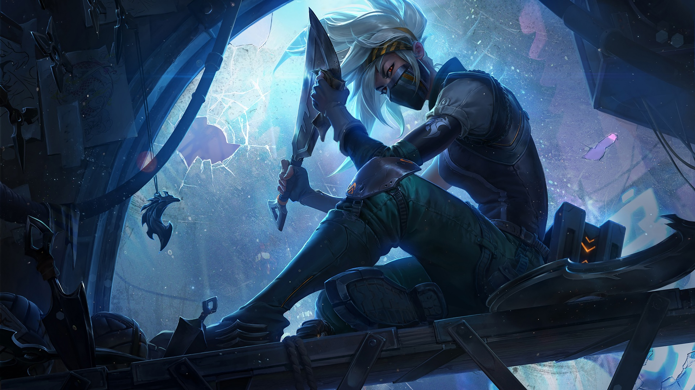
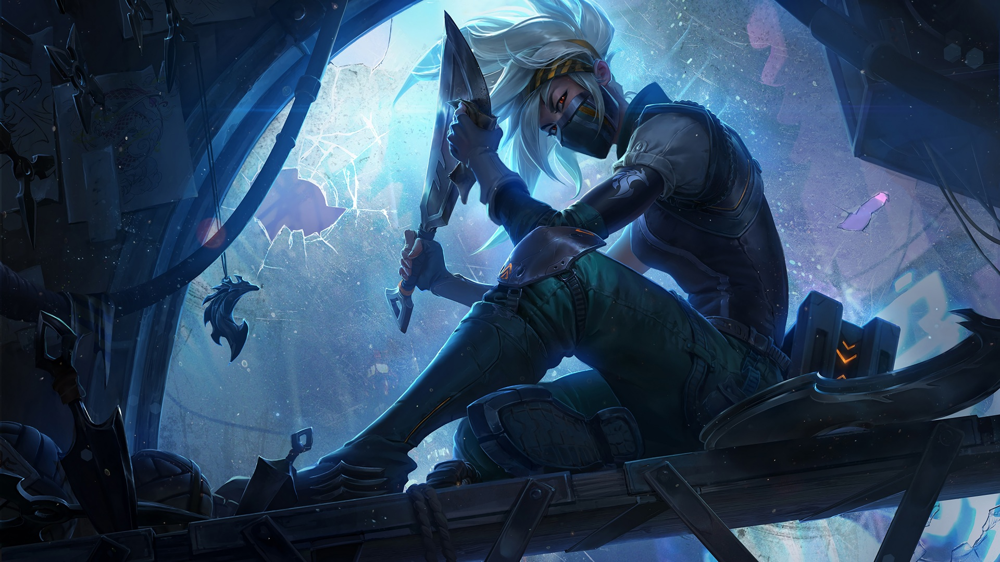
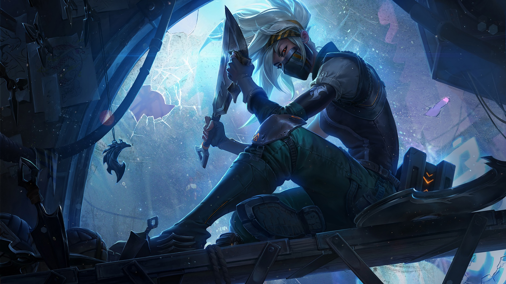
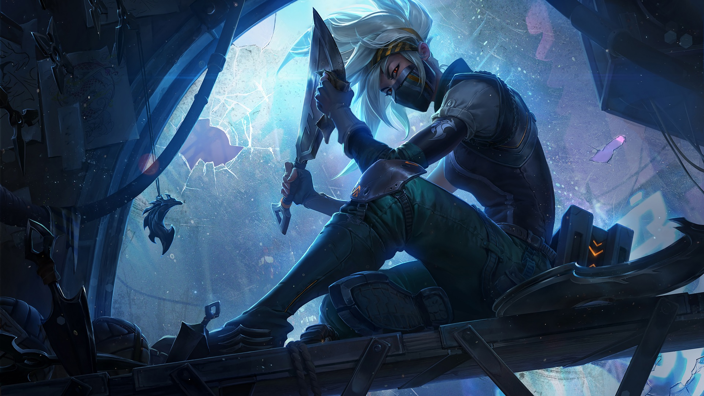

League of Legends (LoL), commonly referred to as League, is a 2009 multiplayer online battle arena video game developed and published by Riot Games. Inspired by Defense of the Ancients, a custom map for Warcraft III, Riot's founders sought to develop a stand-alone game in the same genre. Since its release in October 2009, League has been free-to-play and is monetized through purchasable character customization. The game is available for Microsoft Windows and macOS.
Patch 14.4
Hold the door! Here comes patch 14.4! In this week's patch we have quite a few feels-good-to-play quality of life updates for some gameplay systems and champions. To kick things off we have a kit update for Rek'Sai, an update to help tethers in game feel more responsive, and some follow-up QoL adjustments for Smolder. We also have some feels-good-to-play-against changes to make champions like Illaoi, Fiora, and tank Bard more reasonable if you find yourself matched up with them. We're also making some updates to support power curves, fountain regeneration, Lost Chapter items, adjustments to Emerald+ LP gains, and ARAM! In other news, this is the patch where we update our minimum specs to no longer support Windows 7, 8, and 8.1, so make sure you upgrade! We also have an update on the Vanguard rollout plan, so make sure you read the full section below for all the details. On the TFT side of things, it's the Remix Rumble Championship patch, so make sure you're all caught up on the TFT patch notes here!
More info...